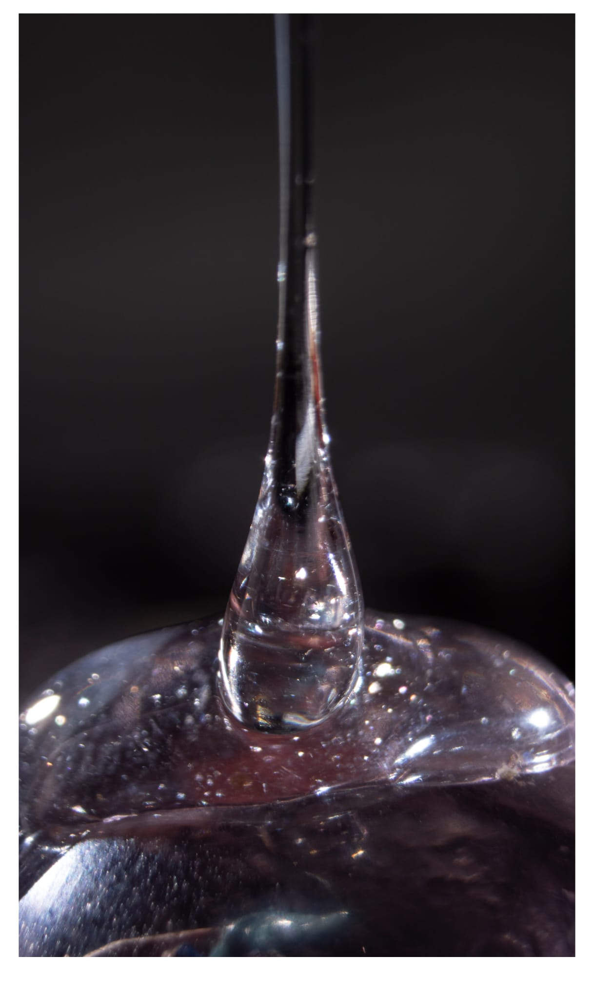

EXPOSICIÓN

Gota de Rubert
En esta obra de estilo "macro" observamos la belleza de lo preciso, del reflejo de la luz sobre el cristal y los pequeños detallesPor Aroa Puerto Sendin
La abstracción a traves de la lente del dispositivo en el tiempo y espacio, llega a producir reacciones sensoriales que no somos capaces de enteder fuera de este ámbito.
Con esta exposición tratamos de recrear esto.
Por Aroa Puerto Sendin